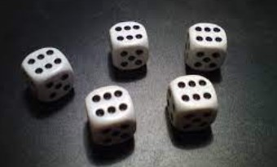
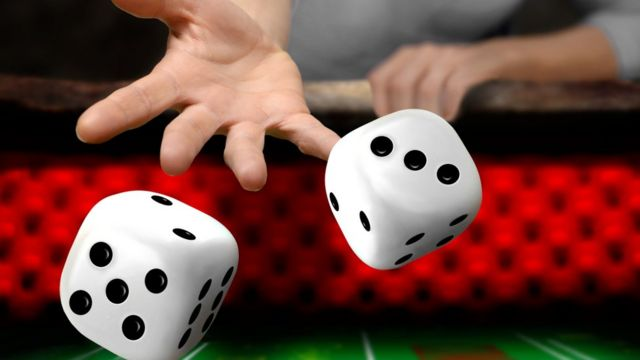

-
 -

-
-

Jugador 1
Jugador 2
Este generador de dados virtuales funciona según el principio del azar. Los dados se lanzarán al azar y la probabilidad del resultado obtenido será idéntica para cada lanzamiento. Por lo tanto, estos dados online están diseñados IT, simplemente haga clic en lanzar para permitir su creación.
También es posible elegir sus números y sus caras. Esto le permitirá crear varios dados para facilitar su lanzamiento. Este sitio también es llamado creador de dados porque le permite al usuario lanzar dados en Internet. Algunos detalles van más allá en la generación: aquí se pasa el azar en todas las contingencias que representan el número de caras. por lo tanto, es lógico que estas probabilidades de obtener dependan sobre todo de este número, así como del número de dados.
Por lo tanto, con cálculos matemáticos es fácil obtener el promedio de un dado y, por lo tanto, tener éxito en el mejor de los casos cálculos sobre los dados virtuales y su obtención. Estas explicaciones lo ayudarán a comprender mejor la generación aleatoria de los llamados dados online
De manera muy resumida, el juego consiste en lanzar los dados contra la pared opuesta de la mesa de juegos y lograr la combinación deseada. Para comprender el juego es necesario saber que la mesa de juego estará dividida de diversas formas, con señales que el jugador principiante no reconocerá de inmediato
A menudo encontramos el uso de dados en los videojuegos cuando queremos usar números aleatorios. Algunos juegos basan su juego en tirar dados para representar gráficamente la suerte del jugador. El dado 6 o D6 es el que más se encuentra, toma la forma de un cubo de 6 caras
Hay una multitud de juegos de mesa que usan dados, como: Yams, Zanzíbar y muchos otros. Además, también hay versiones de ciertos juegos que normalmente contienen cartas pero en versión con dados. Allí encontrarás el juego de as, las suites, el maratón, etc. Con los dados online puedes disfrutar de tu juego de mesa y jugarlo utilizando nuestro generador.